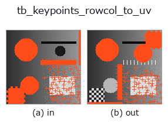

typed op• Datenarten: keypoints → keypoints
• Aufruf: fullseye.apply(img, "tb_keypoints_rowcol_to_uv", a=0.5, b=0.5) (das 2-D-Modell ist ein Bild plus zwei skalare Regler a,b∈[0,1])
• GPU: nein (nur CPU-Referenzimplementierung)

*Die Abbildung ist die tatsächliche Ausgabe auf einer synthetischen 128×128-Eingabe. Links Eingabe, rechts Ausgabe. Punktwolken als Draufsicht-Streudiagramm (Helligkeit = z), 1-D-Reihen als Linie, Volumen als Maximum-Projektion entlang z, Videos als mittleres Bild, komplexe Bilder als Betrag; Rückgabewerte, die kein Bild ergeben, werden als Werte gezeigt.*
*Regler a ändert die Ausgabe nicht (gemessen: identisch bei 0,1 / 0,5 / 0,9).*
*Regler b ändert die Ausgabe nicht (gemessen: identisch bei 0,1 / 0,5 / 0,9).*
Stufen (die vorangehenden Ops → dieser Op, von links nach rechts):
▸ tb_keypoints_rowcol_to_uv: Stufen (Doku-Website)
Auf anderen Bildern (synthetische Szene / Foto / Münzen. Obere Reihe: Eingaben, untere Reihe: deren Ausgaben. Regler auf Standard):
▸ tb_keypoints_rowcol_to_uv: andere Eingaben (Doku-Website)
Bildpunkte (row, col) → (u, v) = (col, row). Die Brücke zwischen den zwei Konventionen der Sorte keypoints.
> Die ausführliche Beschreibung unten ist der Originaltext — Zusammenfassung und Überschriften sind übersetzt.
keypoints 型には 2 つの軸の約束が同居している(実測): calib.project_3d_point などは (row, col)、project_points / dlt_pose / pnp_ransac は (u, v) = (列, 行)。取り違えても例外は出ず、姿勢が鏡に映ったように出る(W2 の実測: t = (−0.565, 0.61, 3.21) のはずが (0.1, −0.05, 3.0))。列を入れ替えるだけだが、どちらの向きかを op 名に書くため
逆向きの keypoints_uv_to_rowcol と 2 本に分けてある(中身は同じ入れ替え)。
Args:
keypoints: (N, 2) の (row, col)。
Returns:
(N, 2) float64 の (u, v)。
Raises:
ValueError: (N, 2) でない / 非有限 / 空。
2-D 進化レジストリへ橋渡しした reprconv の op keypoints_rowcol_to_uv。実装は同じで、呼び出し規約だけ op(v, a, b) に合わせてある。この op に調整点は無く、a も b も使われない。
• Katalog der Beispieldaten (Download-URLs / Lizenzen) — 2-D nutzt skimage.data (BSD/Public Domain) plus synthetische Bilder, 3-D nennt Download-URLs echter Datenquellen (Stanford, PDS, …).
• Herkunft und Literatur der Operatoren — die Quellen der Forschung/Verfahren, auf denen diese Operatorfamilie beruht.
Das Programm unten ist nachweislich lauffähig (gleiche Eingabe wie die Abbildung). In der Studio-Hilfe wird dieser Block zu Schaltflächen, die es sofort laden und ausführen.
img_to_keypoints 0.50 0.50 tb_keypoints_rowcol_to_uv 0.50 0.50
▸ Diese Pipeline laden · Laden & ausführen
Die folgenden Beispiele rufen den zugrunde liegenden Ledger-Op keypoints_rowcol_to_uv auf. Dieser Brücken-Op ist dieselbe Implementierung, angepasst an die Konvention fn(v, a, b); das Verhalten gilt unverändert (nur die Aufrufform unterscheidet sich).
• type_connectivity_tour — py -3.11 examples/type_connectivity_tour.py
keypoints als Eingabe)identity · tb_keypoints_uv_to_points · tb_keypoints_to_image2d · tb_keypoints_uv_to_rowcol
typed)tb_points_to_voxel · tb_estimate_point_normals · tb_iss_keypoints · tb_project_points · tb_render_point_depth · tb_points_render · tb_statistical_outlier_removal · tb_radius_outlier_removal
*Provenance: ops.py — 2D Operator-Registry. Diese Notiz wird von tools/opdocs.py md erzeugt (nicht von Hand bearbeiten).*
© 2026 Kazufumi Furuse — Fullseye operator documentation. Licensed under Apache-2.0.